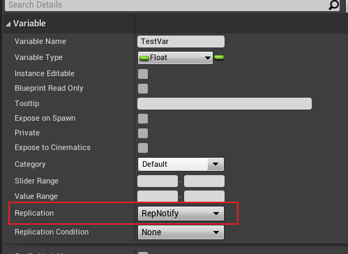

1. UE4 网络框架
client-server 框架，与一般的 APP 应用相同。实际的游戏状态由服务器计算和确认，各个客户端使用自主代理来远程控制其对应角色。控制游戏的 PlayerController 等在服务器和客户端上有不同的备份，可参考如下的结构图
服务器分为listen server和dedicated server，前者可有 UI 界面，并且可与某个客户端运行在同一设备，后者独立于所有客户端，单独进行游戏状态计算，更为公平。
2. 网络同步的几种形式
2.1. Replication
仅支持 server 向 client同步信息，仅支持 Actor子类使用。
2.1.1. actor replication
实现方法：在构造函数中设置bReplicates=true或是 Acotr 蓝图内勾选Replicates，如图
server 上生成，client 也会生成；此外，还控制了property 、component 等 replication行为，类似于总开关。
2.1.2. property replication
在蓝图里，一个property 的replication有三种选项，分别是None，Replicated 和 RepNotify。第一种是直接关闭 property 的 replicate 功能，第二种则是允许 server 端变量的变化同步到各个 client，第三种 RepNotify 则是允许在 server 端变量变化时 client 端调用自定义的函数。
2.1.2.1. property Replicated
实现方法：
- 在cpp文件内 #include “Net/UnrealNetwork.h”
- override 方法
GetLifetimeReplicatedProps，在其中使用 DOREPLIFETIME 注册类名和属性名，如
void AMyActorToTest::GetLifetimeReplicatedProps(TArray< FLifetimeProperty >& OutLifetimeProps) const {
Super::GetLifetimeReplicatedProps(OutLifetimeProps);
DOREPLIFETIME(AMyActorToTest, testStr);//testStr 为声明的一个 property
}
如果想对属性控制加上条件，可以使用 DOREPLIFETIME_WITH_PARAMS 来替 DOREPLIFETIME，会多一个参数用来指定复制的条件参数，实际上 DOREPLIFETIME 内部也是用 DOREPLIFETIME_WITH_PARAMS 来实现的。
#define DOREPLIFETIME_WITH_PARAMS(c,v,params) \
{ \
FProperty* ReplicatedProperty = GetReplicatedProperty(StaticClass(), c::StaticClass(),GET_MEMBER_NAME_CHECKED(c,v)); \
RegisterReplicatedLifetimeProperty(ReplicatedProperty, OutLifetimeProps, params); \
}
#define DOREPLIFETIME(c,v) DOREPLIFETIME_WITH_PARAMS(c,v,FDoRepLifetimeParams())
propety 的 replication 不需要客户端主动做操作，只要声明即可，在对应字段发生变化时 server 会自动向各个 client 广播，适用于变化频率较高的字段，因为即使属性没有发生变化仍然会有监听的 CPU 消耗。
2.1.2.2. RepNotify
变量声明 RepNotify 在蓝图和 cpp 里是不一样的。 在蓝图里，先对变量的 Replication 类型勾选上 RepNotify ，如图  在蓝图中设置变量 RepNotify，此时在 server 和 client 端都可以调用到对应的回调函数，可以在回调函数中打印相应日志来确认 可以看到 server 端和 client 端的回调函数都被调用了 在C++里声明一个 property 为 RepNotify时，使用 ReplicatedUsing=xxx 的形式声明 property 时绑定对应的回调函数名，使用这种方式与蓝图不同，当 server 端发生复制时只会调用到 client 端的回调函数，测试如下 ，此时我们打开 editor 发现只有客户端打印的日志 注意到声明为 RepNotify 也是需要重写 GetLifetimeReplicatedProps函数的，与上面的 Replicated 类似，也可以使用 DOREPLIFETIME_CONDITION_NOTIFY 对 RepNotify 进行条件限定，不仅可以控制变量复制的条件，还可控制 Notify 函数的调用条件
/** Allows gamecode to specify RepNotify condition: REPNOTIFY_OnChanged (default) or REPNOTIFY_Always for when repnotify function is called */
#define DOREPLIFETIME_CONDITION_NOTIFY(c,v,cond,rncond) \
{ \
FDoRepLifetimeParams LocalDoRepParams; \
LocalDoRepParams.Condition = cond; \
LocalDoRepParams.RepNotifyCondition = rncond; \
DOREPLIFETIME_WITH_PARAMS(c,v,LocalDoRepParams); \
}
2.1.3. component replication
在 Actor 的 component 对应的设置中，可以单独为某一个 component 设置其 replication 属性。
2.1.4. Ownership
在上面提到的 Replication Condition 中，对应的枚举值 ELifetimeCondition 中有类似 COND_OwnerOnly 的值，在网络编程中，ownership 是一个关键的概念，可以利用 owner 指定属性值同步的对象。在 Actor 的定义里 owner 属性就说明了用途:
/**
* Owner of this Actor, used primarily for replication (bNetUseOwnerRelevancy & bOnlyRelevantToOwner) and visibility (PrimitiveComponent bOwnerNoSee and bOnlyOwnerSee)
* @see SetOwner(), GetOwner()
*/
UPROPERTY(ReplicatedUsing=OnRep_Owner)
AActor* Owner;
在网络监听的重要方法中 bool UWorld::Listen( FURL& InURL )，可以看到关于 NetDriver 的初始化以及 initListen ，游戏进程的后续网络复制等将会由 NetDriver 来负责。每个 client 都会与 server 建立一个 connection，具体的流程可以参见说明 Client Connection Flow，在 NetConnection 类里，可以看到一个属性用于定义这个 connection 拥有的 playerController
/** Reference to controlling actor (usually PlayerController) */
UPROPERTY()
class AActor* OwningActor;
在文档Actors and their Owning Connections 中有说明，如果一个connection A 的 OwningAcotr 是 playerController A, 并且如果一个 actor 的最外层 owner 也是 playerController A, 那么此 actor 也同属这个 connection，通过这层关系，可以确认到上面所说的 replication cond 何时生效。 ownership 并不是不可变的，可以通过 spawn actor 时指定引脚 owner 或者通过 set owner 节点来修改该 actor 的 owner，也可通过 controller 的 Possess 方法来指定 pawn 的 ownership。
2.1.5. Role and RemoteRole
在 replication 中，actor 的 Role 和 RemoteRole 对属性复制的表现有重要影响，这两个属性可取的值如下枚举所示。
/** The network role of an actor on a local/remote network context */
UENUM()
enum ENetRole
{
/** No role at all.通常意味着Actor在当前上下文中没有网络角色，或者它不是一个网络Actor */
ROLE_None,
/** Locally simulated proxy of this actor. */
ROLE_SimulatedProxy,
/** Locally autonomous proxy of this actor. */
ROLE_AutonomousProxy,
/** Authoritative control over the actor. */
ROLE_Authority,
ROLE_MAX,/** 表示枚举中定义的最大角色数量。它用于内部数组大小和其他需要枚举范围的计算。*/
};
其中，重要的是中间的三个值。首先需要明确 server 更新属性给到 client 并不是每次属性值变化时都会进行的，而是依据AActor::NetUpdateFrequency来确定更新的频率，因此客户端需要对属性进行插值和模拟。
a) ROLE_SimulatedProxy 根据客户端自己的规则来计算，进行相应的插值模拟。注意仍然需要 authority 来进行确认。
b) ROLE_AutonomousProxy 除了根据规则计算，还会有更多信息，比如玩家的输入信息。注意仍然需要 authority 来进行确认。
c) ROLE_Authority 具有权威性的计算，网络复制时可用于表示 server 端，如果像单机游戏，则客户端也是 authority。
2.2. RPC
Remote Procedure Call，即远程过程调用，UE RPC 官方文档RPC 是一种自定义的网络协议，与 HTTP 类似，可用于客户端向服务端请求服务，在 UE 中常用于 actor 的通信以及状态同步。按照文档，无论初始调用RPC的是哪台机器，其的实现仅在目标机器上运行。 若在蓝图中使用，则定义事件后修改其 Replicates 属性，配合设置 event 的 Reliable 值。若在C++中使用，使用UFUNTION宏声明RPC属性。 根据官方文档，当服务器上调用RPC，总结RPC的运行情况与Actor所有权及RPC的属性的关系如下表
| RPC类型 | Not Replicated | NetMulticast | Server | Client | |
|---|---|---|---|---|---|
| 执行调用的Actor所有权 | |||||
| Client-owned actor | 在服务器上运行 | 在服务器和所有客户端上运行 | 在服务器上运行 | 在 actor 的所属客户端上运行 | |
| Server-owned actor | 在服务器上运行 | 在服务器和所有客户端上运行 | 在服务器上运行 | 在服务器上运行 | |
| Unowned actor | 在服务器上运行 | 在服务器和所有客户端上运行 | 在服务器上运行 | 在服务器上运行 |
当在客户端上调用RPC，RPC的运行情况与Actor所有权及RPC属性的关系如下表
| RPC类型 | Not Replicated | NetMulticast | Server | Client | |
|---|---|---|---|---|---|
| 执行调用的Actor所有权 | |||||
| Owned by invoking client | 在执行调用的客户端上运行 | 在执行调用的客户端上运行 | 在服务器上运行 | 在执行调用的客户端上运行 | |
| Owned by a different client | 在执行调用的客户端上运行 | 在执行调用的客户端上运行 | 丢弃 | 在执行调用的客户端上运行 | |
| Server-owned actor | 在执行调用的客户端上运行 | 在执行调用的客户端上运行 | 丢弃 | 在执行调用的客户端上运行 | |
| Unowned actor | 在执行调用的客户端上运行 | 在执行调用的客户端上运行 | 丢弃 | 在执行调用的客户端上运行 |
比较重要的点，在客户端可以通过RPC来调用服务端上声明为server的函数。